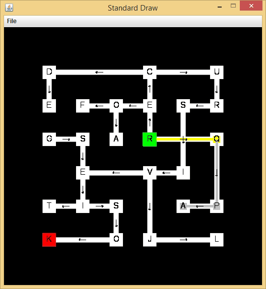
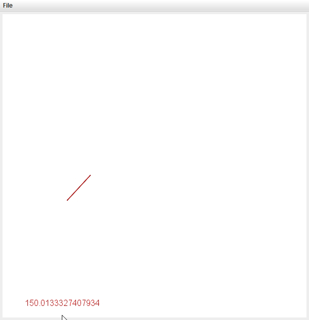

G R A C E H U A N G
Navigate here:
Java Code
Videos
Photography
Art

Maze
Used a depth first search (recursive, binary tree, linked list) to find the solution to the maze

Tour: Nearest Insertion
Used linked lists to insert point of interest to nearest point on the path
Next
Previous